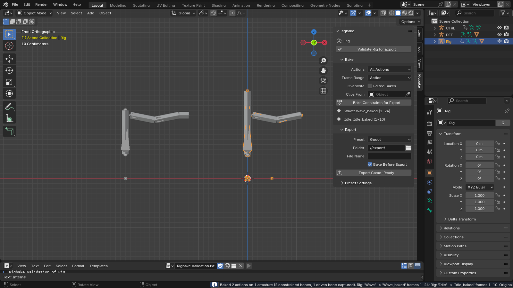
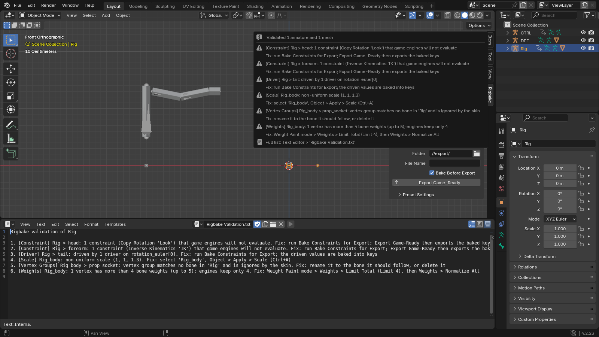
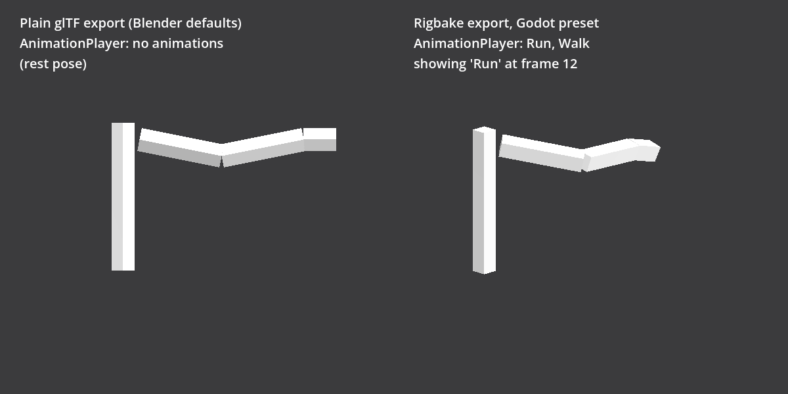
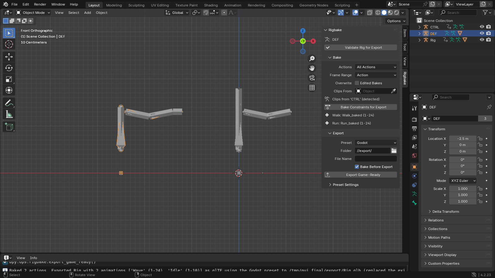

Rigbake for Blender
One clean, correctly named animation clip per action, exported with ready settings for Godot, Unity, and Unreal. Your original actions are never touched.
$19, one-time, source included (GPL-3.0-or-later).
Direct purchase and Superhive listing: coming shortly Documentation

What it does
- Bake Constraints for Export. Bakes every bone constraint and driver into plain keyframes on a new action per clip, from the rest pose, so the result never depends on where the playhead was. Originals untouched. Hand-edited bakes are kept, not overwritten.
- Export Game-Ready. Runs the baked result through Blender's bundled glTF and FBX exporters with explicit, documented settings. Presets for Godot (glTF), Unity (FBX), and Unreal (FBX), editable in the panel and saved with your file. Control rigs: Rigbake detects the driving armature (or you pick it), and with the default settings every one of its actions becomes its own clip.
- Validate Rig for Export. Lists every constraint and driver per bone (bones that just follow a control rig are summed up in one line), unapplied or non-uniform scale, vertices with more than four weights, vertex-group problems, object-level constraints, and shape keys that a preset would drop, each with a one-line fix.
Measured, not promised

| Scenario | Plain Blender export | Rigbake |
|---|---|---|
| Deform rig driven by a separate control rig, exported alone | 0 animations (glTF and FBX) | One clip per action, bone error 0 |
| Two clips stashed on the NLA with IK, plain FBX | 4 takes for 2 clips, two of them wrong by 0.60 m / 0.82 rad | 2 takes, both exact |
| Single rig with IK, Copy Rotation, and a driver | Correct already | Correct; validator and presets are the value |
Round-trip tolerance is 1 mm and 0.001 rad; measured error on the cases above, and on the customer gate's three rigs, is below 1e-5 m in a Blender re-import. Every number comes from the test suite in the repository, which runs on Blender 4.2, 4.5, and 5.0.
How exact in Godot. The exported files are exact: re-imported into Blender, every bone is within 1e-5 m. Godot's default import re-samples each clip at its Animation > FPS setting and its import Optimizer can thin keys: the customer gate measured up to about 3 cm on fast motion, and our every-frame check of the same rigs up to 13 cm. With Animation > FPS set to the Blender frame rate and the AnimationPlayer's Optimizer turned off, every bone matched Blender within 0.0002 m in our check. The quick start shows both settings.
In Blender, for real
Every Blender image below is a capture from Blender 4.2 LTS with Rigbake 1.2.0 installed, not a mockup; the Godot image is a Godot 4.7 render.




Details
- Price: $19, one-time, source included. Direct purchase and the Superhive listing are coming shortly.
- Blender 4.2 or later, installed as an extension from a zip. Verified in a real Blender 4.2 LTS window and in Godot 4.7. The Unity preset's FBX was checked through Godot's FBX importer. The Unreal preset has not been checked in Unreal Engine. Neither has been opened in Unity or Unreal.
- GPL-3.0-or-later. Full source code included with your purchase.
- No telemetry, no analytics, no network calls of any kind.
- Support: support@ochrestack.com. Bugs and feature requests welcome at the same address.
Documentation
The full manual (README.md) and a one-page quick start ship inside the download. The quick start is also online: Rigbake quick start.
Install
- Download
rigbake-1.2.0.zip. Do not unzip it. - In Blender 4.2 or later, open Edit > Preferences > Get Extensions.
- Open the drop-down menu (⌄) at the top right, choose Install from Disk... and pick the zip.
- Press N in the 3D Viewport and open the Rigbake tab.
Two tips for the first ten minutes
- Continue Offline is fine. Get Extensions may ask about internet access and then show a "Repository Alert" about extensions.blender.org. Both come from Blender's online repository. Rigbake needs no internet: choose Continue Offline and install from disk.
- In Godot, set Animation > FPS to your Blender frame rate in the Import dock and click Reimport. For exact motion on fast clips, also turn off the AnimationPlayer's Optimizer (Import dock > Advanced...). See Importing into Godot.
Known limits
- Only bone transforms are baked. Motion keyed on the armature object itself is reported by the validator, not baked.
- Shape keys, custom properties, and B-Bone properties are not baked; keys are written on whole frames.
- Blender 4.5's own FBX importer misreads multi-take files; exports from Rigbake are correct, but re-importing them into 4.5 for checking is not reliable. Use 4.2 or 5.0 to verify, or your engine.